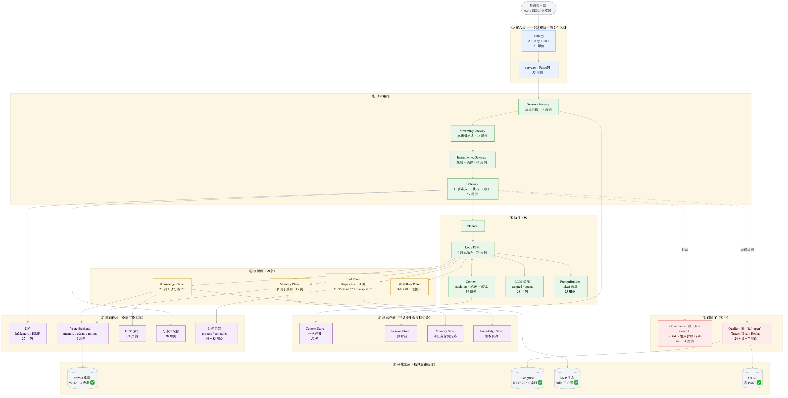

运行时拥有形状
应用拥有内容
Runtime owns the shape · Application owns the content
一个生产形态的 LLM Agent 运行时。它提供控制循环、状态归属、工具分发、 治理、可观测性、持久化；把提示词、业务词汇、领域规则留给应用层。
01为什么需要它
大多数 Agent 框架从提示词出发，长成一堆辅助函数。做演示可以， 但当两个团队要用同一套运行时、各自的提示词与工具、各自的合规要求时，就散了。 这个项目从反方向开始。
补丁协议上下文
状态不是一个随手改的 dict。每次写入都是
apply(Patch(op, path, by, value))，由归属表裁决这个
by 能不能碰这个 path。补丁日志同时是轨迹、回放源、预写日志。
ExecCtx 是大动脉
principal、预算、截止时间、trace id、幂等键、审批、深度、取消信号 都在一个对象里流转。每个面拿到同样的事实，不用摸全局。
有界循环
六个终止条件与三层死锁检测。停不下来的循环不是运行时，是事故。
四资源面 · 两保障面
工具、记忆、知识、工作流四个资源面；治理 fail-closed、质量 fail-open 两个保障面。依赖方向单向，没有环。
02架构
一条主链，四个资源面，两个保障面。核心运行时只依赖标准库， 由 AST 级别的测试守住 —— 边界不是靠自觉，是靠门禁。

| 层 | 职责 | 依赖 |
|---|---|---|
| 接入层 | serve.py · auth.py · 流式 | 只向下 |
| 编排层 | Gateway 11 步准入 → 执行 → 收口 | 只向下 |
| 执行内核 | Planner · Loop FSM · Context · LLM · PromptBuilder | 只向下 |
| 资源面 ×4 | Tool · Memory · Knowledge · Workflow | core 只依赖 stdlib |
| 保障面 ×2 | 治理 fail-closed · 质量 fail-open | 横切 |
| 存储 | Context store / KV / Vector，全部可换 | SPI |
03验证了什么，没验证什么
这张表是这份文档里最该看的部分。有数字的写数字，没测的直说没测。
已验证
| 单元 + 集成 | 2258 通过 |
| 端到端场景 | 11 场景 / 80 断言 |
| 架构约束 | core 零第三方依赖 |
| 故障演练 | 6 项姿态验证 |
| 长稳压测 | 20min ×2 / 13.7 万请求 / p99 105ms |
| 真实 LLM 延迟 | 三组上游：云端 2.7s / T4 4.3s / 4090 27B 4.7s |
| 多 worker 扩展 | 4 worker 2.97× / 8 worker 3.59× |
| 会话跨副本 | STORE=redis，turn_index 连续 |
| sqlite 写入争用 | 多进程 3.07×，零失败 |
| 推理模型思维链 | 默认剥离，9 个用例覆盖 |
未验证 / 有条件
| 缓存计价的真实上游 | 三组上游都不报 cache hit |
| 8 worker 真实上限 | 需第二台机器 |
| 长稳 > 20 分钟 | 数小时级未跑 |
| 网络 RTT 封顶吞吐 | 28ms 链路：3260 RPS / CPU 仅 271% |
04由来
这不是一个"我要写个框架"的产物，是一次又一次"这个不该由应用层决定"的累积。
状态归属
两个模块都往同一份上下文里写，出了矛盾查不出是谁写的。于是有了归属表。
停不下来的循环
工具返回空、模型重试、预算耗尽还在跑。于是有了六个终止条件。
数字会过期
文档写着"6 道门禁"，实际 7 道。于是数字也进了门禁检查。
05快速开始
不联网、不需要密钥就能跑通骨架。先看它长什么样，再决定接什么模型。
# 克隆（尚未发布到 PyPI；PyPI 上的 agent-runtime 是无关的包） git clone https://github.com/XiaoBinGan/Turing_AgentRuntime.git cd Turing_AgentRuntime python3 -m venv .venv && .venv/bin/pip install -r requirements-core.txt # 从最小示例开始：40 行，不需要 API key .venv/bin/python examples/quickstart/01_minimal.py # 审批流：T2 工具 → 挂起 → 三种结果 .venv/bin/python examples/quickstart/03_approval.py # 11 个端到端场景 + 七道门禁 .venv/bin/python demo/run.py ./verify.sh